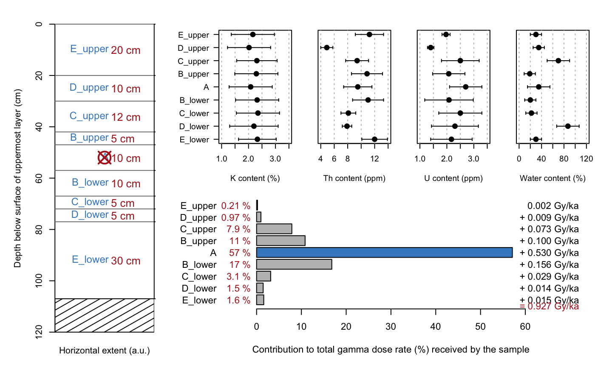

R/scale_GammaDose.R
scale_GammaDose.RdThis function calculates the gamma dose deposited in a luminescence sample taking into account layer-to-layer variations in sediment radioactivity . The function scales user inputs of uranium, thorium and potassium based on input parameters for sediment density, water content and given layer thicknesses and distances to the sample.
data.frame (required): A table containing all relevant information for each individual layer. The table must have the following named columns:
id (character): an arbitrary id or name of each layer
thickness (numeric): vertical extent of each layer in cm
sample_offset (logical): distance of the sample in cm,
measured from the BOTTOM OF THE TARGET LAYER. Except for the target layer
all values must be NA.
K (numeric): K nuclide content in %
K_se (numeric): error on the K content
Th (numeric): Th nuclide content in ppm
Th_se (numeric): error on the Th content
U (numeric): U nuclide content in ppm
U_se (numeric): error on the U content
water_content (numeric): water content of each layer in %
water_content_se (numeric): error on the water content
density (numeric): bulk density of each layer in g/cm^-3
character (optional): The conversion factors used to calculate the dose rate from sediment nuclide contents. Valid options are:
"Cresswelletal2018" (default)
"Liritzisetal2013"
"Guerinetal2011"
"AdamiecAitken1998"
character (optional): Factors to scale gamma dose rate values. Valid options are:
"Aitken1985" (default): Table H1 in the appendix
logical (optional):
Show or hide console output (defaults to TRUE).
logical (optional):
Show or hide the plot (defaults to TRUE).
logical (optional):
Show all plots in one panel (defaults to TRUE).
Further parameters passed to barplot.
After performing the calculations the user is provided with different outputs.
The total gamma dose rate received by the sample (+/- uncertainties) as a print in the console.
A plot showing the sediment sequence, the user input sample information and the contribution to total gamma dose rate.
RLum Results. If the user wishes to save these results, writing a script to run the function and to save the results would look like this:
mydata <- read.table("c:/path/to/input/file.txt")
results <- scale_GammaDose(mydata)
table <- get_RLum(results)
write.csv(table, "c:/path/to/results.csv")-----------------------------------
[ NUMERICAL OUTPUT ]
-----------------------------------
RLum.Results-object
slot:
@data
| Element | Type | Description |
$summary | data.frame | summary of the model results |
$data | data.frame | the original input data |
$dose_rates | list | two data.frames for the scaled and infinite matrix dose rates |
$tables | list | several data.frames containing intermediate results |
$args | character | arguments of the call |
$call | call | the original function call |
slot:
@info
Currently unused.
------------------------
[ PLOT OUTPUT ]
------------------------
Three plots are produced:
A visualisation of the provided sediment layer structure to quickly assess whether the data was provided and interpreted correctly.
A scatter plot of the nuclide contents per layer (K, Th, U) as well as the water content. This may help to correlate the dose rate contribution of specific layers to the layer of interest.
A barplot visualising the contribution of each layer to the total dose rate received by the sample in the target layer.
User Input
To calculate the gamma dose which is deposited in a sample, the user needs to provide information on those samples influencing the luminescence sample. As a rule of thumb, all sediment layers within at least 30 cm radius from the luminescence sample taken should be taken into account when calculating the gamma dose rate. However, the actual range of gamma radiation might be different, depending on the emitting radioelement, the water content and the sediment density of each layer (Aitken, 1985). Therefore the user is advised to provide as much detail as possible and physically sensible.
The function requires a data.frame that is to be structured
in columns and rows, with samples listed in rows. The first column contains
information on the layer/sample ID, the second on the thickness (in cm) of
each layer, whilst column 3 should contain NA for all layers that are not
sampled for OSL/TL. For the layer the OSL/TL sample was taken from a numerical
value must be provided, which is the distance (in cm) measured from bottom
of the layer of interest. If the whole layer was sampled insert 0. If the
sample was taken from within the layer, insert a numerical value >0,
which describes the distance from the middle of the sample to the bottom of
the layer in cm. Columns 4 to 9 should contain radionuclide concentrations
and their standard errors for
potassium (in %), thorium (in ppm) and uranium (in ppm). Columns 10 and 11
give information on the water content and its uncertainty (standard error)
in %. The layer density (in g/cm3) should be given in column 12. No cell
should be left blank. Please ensure to keep the column titles as given in
the example dataset (data('ExampleData.ScaleGammaDose'), see examples).
The user can decide which dose rate conversion factors should be used to calculate the gamma dose rates. The options are:
"Cresswelletal2018" (Cresswell et al., 2018)
"Liritzisetal2013" (Liritzis et al., 2013)
"Guerinetal2011" (Guerin et al., 2011)
"AdamiecAitken1998" (Adamiec and Aitken, 1998)
Water content
The water content provided by the user should be calculated according to:
$$ ( Wet weight [g] - Dry weight [g] ) / Dry weight [g] * 100 $$
Calculations
After converting the radionuclide concentrations into dose rates, the function will scale the dose rates based on the thickness of the layers, the distances to the sample, the water content and the density of the sediment. The calculations are based on Aitken (1985, Appendix H). As an example (equivalent to Aitken, 1985), assuming three layers of sediment, where L is inert and positioned in between the infinite thick and equally active layers A and B, the dose in L and B due to A is given by
$$ {1-f(x)}D_A $$
Where x is the distance into the inert medium, so f(x) is the weighted
average fractional dose at x and D_A denotes that the dose is delivered by A.
f(x) is derived from table H1 (Aitken, 1985), when setting z = x.
Consequently, the dose in A and L due to B is given by
$$ {1 - f(t-x)}D_B $$
Here t is the thickness of L and the other parameters are denoted as above,
just for the dose being delivered by B. f(t-x) is derived from table H1
(Aitken, 1985), when setting z equal to t-x. Following this, the dose in L
delivered by A and B is given by
$$ {2 - f(x) - f(t-x)}D_{AB} $$
Since A and B are equally active D_{AB} = D_A = D_B.
The function uses the value of the fractional dose rate at the layer boundary to start the calculation for the next layer. This way, the function is able to scale the gamma dose rate accurately for distant layers when the density and water content is not constant for the entire section.
This function has BETA status. If possible, results should be cross-checked.
0.1.2
We thank Dr Ian Bailiff for the provision of an excel spreadsheet, which has been very helpful when writing this function.
Riedesel, S., Autzen, M., Burow, C., 2022. scale_GammaDose(): Calculate the gamma dose deposited within a sample taking layer-to-layer variations in radioactivity into account (according to Aitken, 1985). Function version 0.1.2. In: Kreutzer, S., Burow, C., Dietze, M., Fuchs, M.C., Schmidt, C., Fischer, M., Friedrich, J., Mercier, N., Philippe, A., Riedesel, S., Autzen, M., Mittelstrass, D., Gray, H.J., Galharret, J., 2022. Luminescence: Comprehensive Luminescence Dating Data Analysis. R package version 0.9.20. https://CRAN.R-project.org/package=Luminescence
Aitken, M.J., 1985. Thermoluminescence Dating. Academic Press, London.
Adamiec, G., Aitken, M.J., 1998. Dose-rate conversion factors: update. Ancient TL 16, 37-46.
Cresswell., A.J., Carter, J., Sanderson, D.C.W., 2018. Dose rate conversion parameters: Assessment of nuclear data. Radiation Measurements 120, 195-201.
Guerin, G., Mercier, N., Adamiec, G., 2011. Dose-rate conversion factors: update. Ancient TL, 29, 5-8.
Liritzis, I., Stamoulis, K., Papachristodoulou, C., Ioannides, K., 2013. A re-evaluation of radiation dose-rate conversion factors. Mediterranean Archaeology and Archaeometry 13, 1-15.
# Load example data
data("ExampleData.ScaleGammaDose", envir = environment())
x <- ExampleData.ScaleGammaDose
# Scale gamma dose rate
results <- scale_GammaDose(data = x,
conversion_factors = "Cresswelletal2018",
fractional_gamma_dose = "Aitken1985",
verbose = TRUE,
plot = TRUE)
#>
#> [scale_GammaDose()]
#>
#> ----
#> Conversion factors: Cresswelletal2018
#> Gamma dose fractions: Aitken1985
#> Target layer: A
#>
#> ---- Infinite matrix gamma dose rate per layer ----
#>
#> ID K (Gy/ka) Th (Gy/ka) U (Gy/ka) Total (Gy/ka)
#> 1 E_upper 0.399±0.199 0.409±0.156 0.164±0.056 0.973
#> 2 D_upper 0.358±0.175 0.171±0.058 0.112±0.033 0.641
#> 3 C_upper 0.319±0.138 0.256±0.086 0.156±0.062 0.730
#> 4 B_upper 0.467±0.295 0.437±0.248 0.191±0.115 1.094
#> 5 A 0.369±0.254 0.332±0.203 0.216±0.133 0.917
#> 6 B_lower 0.469±0.285 0.439±0.238 0.190±0.125 1.097
#> 7 C_lower 0.466±0.265 0.317±0.150 0.224±0.124 1.006
#> 8 D_lower 0.274±0.129 0.194±0.048 0.129±0.057 0.597
#> 9 E_lower 0.431±0.193 0.437±0.161 0.181±0.088 1.049
#>
#> ---- Scaled gamma dose rate for target layer: A ----
#>
#> ID K (Gy/ka) Th (Gy/ka) U (Gy/ka) Contribution (%)
#> 1 E_upper 0.001±0.000 0.001±0.000 0.000±0.000 0.2
#> 2 D_upper 0.005±0.003 0.002±0.001 0.001±0.000 1.0
#> 3 C_upper 0.033±0.014 0.025±0.008 0.015±0.006 7.9
#> 4 B_upper 0.043±0.027 0.040±0.023 0.017±0.010 10.8
#> 5 A 0.207±0.143 0.193±0.118 0.129±0.079 57.1
#> 6 B_lower 0.068±0.041 0.062±0.033 0.026±0.017 16.8
#> 7 C_lower 0.014±0.008 0.009±0.004 0.006±0.003 3.1
#> 8 D_lower 0.007±0.003 0.004±0.001 0.003±0.001 1.5
#> 9 E_lower 0.006±0.003 0.006±0.002 0.002±0.001 1.6
#> 10 TOTAL 0.385±0.152 0.342±0.125 0.200±0.082 100.0
#>
#> ----
#> Infinite matrix gamma dose rate: 0.917 ± 0.351 Gy/ka
#> Scaled gamma dose rate: 0.927 ± 0.214 Gy/ka
#>

get_RLum(results)
#> id dose_rate_K dose_rate_K_err dose_rate_Th dose_rate_Th_err dose_rate_U
#> 1 A 0.3854764 0.1521888 0.3419409 0.1252244 0.1999792
#> dose_rate_U_err dose_rate_total dose_rate_total_err
#> 1 0.08217342 0.9273965 0.21353